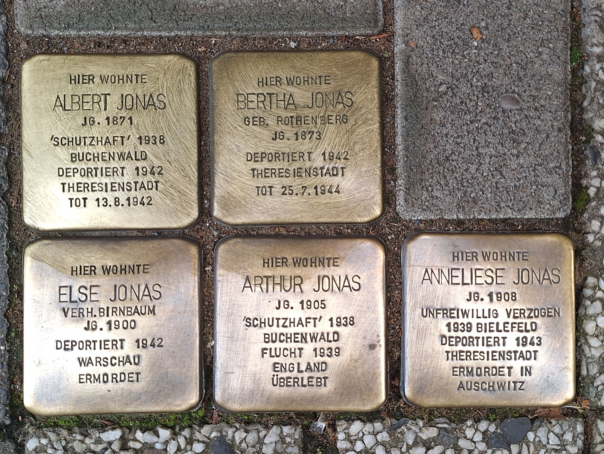
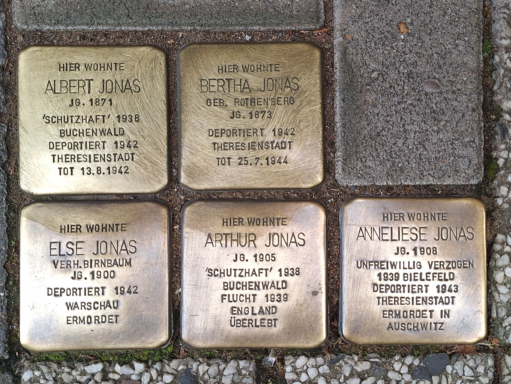

Familie Jonas
 

Baustraße 16
Hier liegen Stolpersteine für Bertha und Albert Jonas und ihre Kinder Else, Arthur und Anneliese. Am 23. Juli 1942 wurde Albert Jonas zusammen mit seiner Ehefrau Bertha in das „Altersghetto“ Theresienstadt deportiert. Er starb dort wenige Tage später, sie überlebte noch zwei Jahre. Ihre Tochter Else Jonas wurde am 31. März 1942 in das Ghetto Warschau deportiert und im August desselben Jahres wahrscheinlich in das Vernichtungslager Treblinka verschleppt. Dort wurden die Menschen sofort nach ihrer Ankunft ermordet.
License
Bilder der Stolpersteine Hameln by Taron Dahn is licensed under CC BY-NC-ND 4.0